자연생태복원기사(구) (2020-06-06 기출문제)
1과목: 환경생태학개론
1. 환경호르몬에 대한 설명으로 옳지 않은 것은?
- 생체 호르몬처럼 쉽게 분해된다.
- 돌연변이, 암 등을 유발하곤 한다.
- 생물체의 지방 및 조직에 농축된다.
- 생체 내에 잔존하며 수년간 지속될 수 있다.
(정답률: 89%)

2. 수생태계에 미치는 영향 중 부영양화의 직접적인 원인이 아닌 것은?
- 생활하수
- 집중호우
- 가축분뇨
- 농경지 유출수
(정답률: 88%)
3. 담수의 수질평가 시 생물지수를 이용한 측정 방법에 대한 설명으로 옳지 않은 것은?
- 종 또는 분류군에 따라 다른 가중치를 준다.
- 군집변화의 수를 이용한 지수로 계량화하여 분석하는 방법을 말한다.
- 생물이 지닌 내성의 한계나 환경에 따른 반응성을 고려한 방법이다.
- 생물의 여러 가지 고유성을 감안하여 제작된 객관적인 지수이다.
(정답률: 52%)
4. 생물이 일주율로 시간을 감지하는 현상을 무엇이라 하는가?
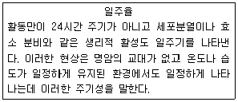
- 생물학적 시계
- 생물학적 주기성
- 생물학적 주행성
- 생물학적 야행성
(정답률: 60%)
5. 에너지가 무기 환경에서 생물계로 들어오는 최초 과정에 해당되는 것은?
- 생산자의 광합성
- 분해자에 의한 생물 사체의 분해
- 생산자의 1차 소비자에 의한 소비
- 1차 소비자의 2차 소비자에 의한 소비
(정답률: 83%)
6. 생물군집에서 여러 다른 종들 사이에 일어날 수 있는 상호작용이 아닌 것은?
- 공생
- 기생
- 호흡
- 경쟁
(정답률: 89%)
7. 육상 산림생태계의 천이과정을 옳게 나열한 것은?
- 나지→음수→양수→1년생 초본→다년생 초본→극상림
- 나지→음수1년생→초본→다년생 초본→양수→극상림
- 나지→1년생 초본→다년생 초본→음수→양수→극상림
- 나지→1년생 초본→다년생 초본→양수→음수→극상림
(정답률: 77%)
8. 공진화(coevolution)에 대한 설명으로 옳지 않은 것은?
- 두 종 모두에서 일어나는 변화이다.
- 상리공생하는 군총에서는 공진화가 필요없다.
- 둘 이상의 종이 상호작용하여 일어나는 진화이다.
- 많은 군집들이 수 세대 동안 진화를 반복하면서 발전되어 왔다.
(정답률: 86%)
9. 다음 중 ( )안에 들어갈 용어를 옳게 나열한 것은?
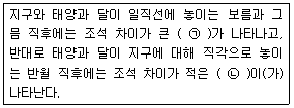
- ㉠ 고조, ㉡ 저조
- ㉠ 사리, ㉡ 조금
- ㉠ 창조, ㉡ 낙조
- ㉠ 만조, ㉡ 간조
(정답률: 71%)
10. 흰개미와 흰개미의 내장에 서식하는 미생물(Trichonympha 속)과의 관계를 설명하는 상호작용으로 옳은 것은?
- 경쟁
- 기생
- 포식
- 상리공생
(정답률: 77%)
11. 군집 내에서 에너지의 안정상태에 대한 설명으로 옳지 않은 것은?
- 안정상태의 군집은 총광합성량과 총호흡량의 비율이 1이다.
- 군집의 호흡량을 초과하여 축적되는 생산량을 군집순생산량이라 한다.
- 소나무 조림지는 생산된 에너지양보다 호흡으로 소실된 양이 더 많다.
- 열대우림은 호흡으로 소실된 에너지양과 광합성으로 고정된 에너지양이 같다.
(정답률: 63%)
12. 다음 [보기]가 설명하는 용어로 옳은 것은?
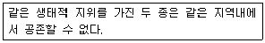
- 순위
- 자연선택
- 형질대치
- 경쟁배타의 원리
(정답률: 86%)
13. 대표적인 토양환경의 변화인 토양침식(erosion)에 대한 설명으로 옳지 않은 것은?
- 지나친 경작이나 방목 등이 원인이다.
- 토양침식에 의해 경작이 불가능한 지역이 감소하게 된다.
- 침식이 일어나면 작물재배에 적합한 흙이 가장 먼저 씻겨나간다.
- 강우량이 적은 지역에서의 토양침식은 사막화를 초래할 수 있다.
(정답률: 80%)
14. 생물이 생태계에서 차지하는 구조적, 기능적 역할을 종합적으로 나타내는 개념은?
- 길드
- 주행성
- 지위유사종
- 생태적 지위
(정답률: 86%)
15. 엘니뇨현상에 대한 설명으로 옳지 않은 것은?
- 이상기후를 일으킨다.
- 엘니뇨현상은 무역풍이 강해지면 발생한다.
- 정반대되는 변화를 일으키는 것은 라니냐현상이다.
- 해수의 온도가 증가하여 주변지역과 멀리 떨어진 지역에 폭풍, 홍수 등 각종 내난을 일으키는 기후 현상이다.
(정답률: 76%)
16. 개체군의 분산형태 중 균일형(uniform distribution)에 대한 설명으로 옳은 것은?
- 자연상태에서 많이 나타나는 현상
- 환경이 고르지 못하고 생식이나 먹이를 구하는 개체군
- 생존경쟁이 치열하지 않고 환경조건이 균일하지 않은 곳에서 관찰 가능
- 전 지역을 통하여 환경조건이 균일하고 개체 간에 치열한 경쟁이 일어나는 개체군
(정답률: 70%)
17. 일반적으로 우점도를 비교할 때 사용되는 지수는?
- 브라운 지수
- 마이애미 지수
- Shannon index
- Simpson index
(정답률: 59%)
18. 다음 [보기] 중 하구역 환경의 특성에 속하는 것을 모두 고른 것은?
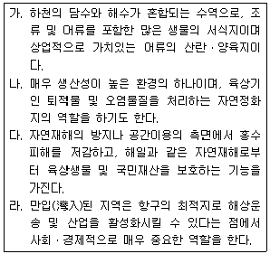
- 가, 다
- 가, 라
- 가, 나, 다
- 가, 나, 다, 라
(정답률: 64%)
19. 생물이 살아가는데 관여하는 많은 조건 중에서 생물은 공급이 가장 부족한 단일 혹은 소수조건에 의해 지배되는데 이러한 특수요인을 무엇이라고 하는가?
- 극상
- 기대치
- 내성요인
- 제한요인
(정답률: 82%)
20. 다음 중 생태계 구성요소와 그 역할에 대한 설명으로 옳지 않은 것은?
- 무기환경 - 빛, 공기, 물 등을 말한다.
- 소비자 - 종속영양생물로 육식동물을 말한다.
- 생산자 - 녹색식물을 먹는 초식동물을 말한다.
- 분해자 - 낙엽, 동물사체 등을 분해하는 생물을 말한다.
(정답률: 86%)
2과목: 환경계획학
21. 국가환경종합계획에 대한 설명으로 옳지 않은 것은?
- 국가환경종합계획에는 환경의 현황 및 전망에 관한 사항이 포함된다.
- 수립된 국가환경종합계획은 국무회의의 심의를 거쳐 확정 된다.
- 환경부장관은 관련 규정에 의하여 확정된 국가환경종합계획의 종합적ㆍ체계적 추진을 위하여 3년마다 환경보전중기종합계획을 수립하여야 한다.
- 환경부장관은 관계 중앙행정기관의 장과 협의하여 국가 차원의 환경보전을 위한 종합계획을 20년마다 수립하여야 한다.
(정답률: 64%)
22. 관리 조방적 옥상녹화에 대한 설명으로 옳지 않은 것은?
- 건조 비오톱을 창출할 수 있다.
- 열악한 옥상환경조건에 잘 견디는 식물을 이용한다.
- 인간의 이용을 위해 휴식적, 미적, 감상적 측면에 역점을 둔다.
- 인위적 관리를 최소로하여 자연상태에 맡겨두는 녹화방법이다.
(정답률: 51%)
23. 환경지표는 정보전달의 제1종 지표와 가치평가의 제2종 지표로 구분할 수 있다. 이 때 제2종 지표의 사례만 나열한 것은?
- 물가지수, 수질종합지표
- 물가지수, 대기질 종합지표
- 오염피해 지표, 대기질 종합지표
- 오염피해 지표, 도시쾌적성ㆍ만족도 지표
(정답률: 59%)
24. 자연환경보전법상 다음 [보기]가 설명하는 용어로 옳은 것은?
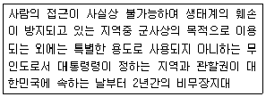
- 자연유보지역
- 생물권보전지역
- 생태ㆍ경관보전지역
- 시ㆍ도 생태ㆍ경관보전지역
(정답률: 57%)
25. 다음 [보기]가 설명하는 국제협력기구는?
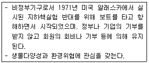
- 그린피스(Greenpeace)
- 지구의 친구(Friends of the Earth)
- 세계야생생물기금(World Wildlife Fund)
- 지구환경기금(the Global Environment Facility)
(정답률: 78%)
26. 생물다양성 보전 및 이용에 관한 법률상 외국으로부터 인위적 또는 자연적으로 유입되어 그 본래의 원산지 또는 서식지를 벗어나 존재하게 된 생물로 정의되는 용어는?
- 외래생물
- 유해야생 생물
- 생태계교란 생물
- 귀화ㆍ유전자 변형 생물
(정답률: 76%)
27. 국토의 계획 및 이용에 관한 법률상 용도지역 중 관리지역에 해당하지 않는 것은?
- 계획관리지역
- 개발관리지역
- 생산관리지역
- 보전관리지역
(정답률: 49%)
28. 도시 생태ㆍ녹지 네트워크 계획 수립의 흐름으로 가장 적합한 것은?
- 과제정리-평가-해석-조사-계획
- 과제정리-조사-평가-해석-계획
- 조사-해석-평가-과제정리-계획
- 조사-평가-과제정리-해석-계획
(정답률: 64%)
29. 다음 [보기]에 제시된 현대적 환경관의 특성 및 이념을 가진 유형으로 옳은 것은?
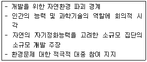
- 낙관론자
- 조화론자
- 환경보호론자
- 절대환경론자
(정답률: 64%)
30. 생태 네트워크 계획 시 고려해야 할 주요 내용과 가장 거리가 먼 것은?
- 사회적 편익을 위한 녹지의 확보
- 인간성 회복의 장이 되는 녹지의 확보
- 생물의 생식ㆍ생육공간이 되는 녹지의 확보
- 생물의 생식ㆍ생육공간이 되는 녹지의 생태적 기능의 향상
(정답률: 67%)
31. 생태공원 조성 이론에 대한 설명으로 옳지 않은 것은?
- 지속가능성은 생물자원을 지속적으로 보전, 재생하여 생태적으로 영속성을 유지한다.
- 생물적 다양성은 유전자, 종, 소생물권 등의 다양성을 의미하여 생물적 다양성과 생태적 안정성은 반비례한다.
- 생태적 건전성은 생태계 내 자체 생산성을 유지함으로써 건전성이 확보되며 지속적으로 생물자원 이용이 가능하다.
- 최소의 에너지 투입은 자연 순환계를 형성하여 에너지, 자원, 인력 투입을 절감하고, 경제적 효율을 극대화할 수 있도록 계획한다.
(정답률: 66%)
32. 다음 [보기]가 설명하는 용어로 옳은 것은?
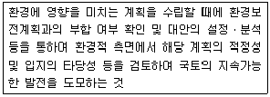
- 환경영향평가
- 전략환경영향평가
- 소규모 환경영향평가
- 소규모 전략환경영향평가
(정답률: 52%)
33. 식물군락이 갖는 환경 개선력을 살린 기술을 기본으로 하여 생태환경 복원ㆍ녹화의 목적을 달성하기 위한 추진 방향과 가장 거리가 먼 것은?
- 자연회복을 도와주도록 하여야 한다.
- 자연의 군락을 재생ㆍ창조하여야 한다.
- 자연에 가까운 방법으로 군락을 재생하여야 한다.
- 식물을 식재하여 천이가 이루어지게 하여야 한다.
(정답률: 42%)
34. 람사르협약에 대한 설명으로 옳은 것은?
- 오존층 파괴물질이 규제에 관한 국제협약이다.
- 생물종의 멸종위기를 극복하기 위해서 체결된 국제협약이다.
- 1997년 이산화탄소를 비롯한 온실가스 방출을 제한하고자 하는 지구온난화방지를 위한 국제협약이다.
- 습지 보전의 필요성에 대한 인식으로 식자되었으며 물새 서식처로서 국제적으로 중요한 습지에 관한 협약이다.
(정답률: 74%)
35. 환경가치 추정하는 방법으로 옳지 않은 것은?
- 여행비용에 의한 추정 방법
- 속성가격에 의한 추정 방법
- 지불용의액에 의한 추정 방법
- 환경수용력에 의한 추정 방법
(정답률: 43%)
36. 환경정책기본법상 환경기준의 설정에 대한 설명으로 가장 거리가 먼 것은?
- 환경기준은 대통령령으로 정한다.
- 오염물질 배출에 대한 개략적인 기준을 설정한다.
- 환경 여건의 변화에 따른 적정성이 유지되도록 한다.
- 생태계 또는 인간의 건강에 미치는 영향 등을 고려하여 환경기준을 설정하여야 한다.
(정답률: 51%)
37. 도시 우수처리시스템에 대한 설명으로 옳은 것은?
- 우수처리 단계는 사전처리 - 이용 - 저류 - 침투 - 배수이다.
- 저류 단계에서는 사전 정수 처리를 위하여 저류옥상을 사용한다.
- 이용 단계의 과정은 오염물질이 지하수로 유입되는 것을 막는 과정이다.
- 침투 단계에서 정수 및 저류 기능을 위하여 침투구덩이와 침투조를 사용한다.
(정답률: 55%)
38. 지속가능한 지표의 기본골격을 제시하고 있는 OECD는 1991년 OECED환경장관회의에서 인간활동과 환경의 관계를 다루는 공통의 접근구조를 채택하였다. 이에 해당하지 않는 것은?
- 부하(Pressure)
- 환경상태(State)
- 대책(Response)
- 구동력(Driving Force)
(정답률: 58%)
39. 국토의 계획 및 이용에 관한 법률상 도시지역 내 준주거지역에서 100m2의 땅을 가지고 있는 사람이 필로티가 없는 건축물을 신축한다면 법상의 한도 내에서 가능한 건축물은?
- 바닥면적 60m2의 9층 건축물
- 바닥면적 60m2의 10층 건축물
- 바닥면적 70m2의 7층 건축물
- 바닥면적 70m2의 10층 건축물
(정답률: 58%)
40. 환경계획의 영역적 분류 중 내셔널 트러스트운동과 가장 깊은 관련을 가진 분야는?
- 오염관리계획
- 환경시설계획
- 생태건축계획
- 환경자원관리계획
(정답률: 61%)
3과목: 생태복원공학
41. 천이의 유형 중 수분조건과 관련하여 빙하토와 같이 적습한 토양에서 시작하는 천이는?
- 수생천이
- 건생천이
- 중성천이
- 퇴행천이
(정답률: 44%)
42. 야생동물 생태통로 조성 시 각 종별 이동 촉진을 위한 방법으로 가장 적합한 것은?
- 곤충류의 경우 1~2km 정도의 넓은 서식처 조성
- 양서ㆍ파충류의 경우 서식 및 이동을 위한 수변 환경을 조성
- 조류의 경우 다층구조가 형성된 1~2m 정도의 좁은 녹치축 조성
- 포유류의 경우 이동통로의 신속성을 위해 단층구조 형성과 돌담, 바위 등의 지장물을 제거
(정답률: 70%)
43. 다음 습지 식물 중 침수식물은?
- 마름
- 부들
- 개구리밥
- 이삭물수세미
(정답률: 62%)
44. 채석장에서 돌을 뜰 때 앞면, 길이(뒷길이), 뒷면, 접촉면, 허리치기의 치수를 특별한 규격에 맞도록 지정하여 만든 쌓기용 석재는?
- 마름돌
- 견치돌
- 사고석
- 각석 및 판석
(정답률: 66%)
45. 훼손지 유형 중 연암 및 풍화암반에 적용할 녹화공법으로 적절하지 않은 것은?
- 식구공법
- 주입객토공법
- 지오웨브공법
- 구절객토공법
(정답률: 53%)
46. 생태통로의 부정적 효과가 아닌 것은?
- 포식기회의 증대
- 동물의 안전한 이동
- 동물의 접촉 감염 등에 의한 질병의 전염
- 본래 일어나지 않을 유전적 교류의 조장
(정답률: 75%)
47. 수서곤충의 유충이 생활하기에 적합한 수심으로 옳은 것은?
- 10cm 이상
- 20cm 이상
- 35cm 이상
- 50cm 이상
(정답률: 39%)
48. 생태계 복원에 대한 개념 설명 중 옳지 않은 것은?
- 종수와 다양성이 증가할수록 총생체량은 증가하고 영양물질은 감소한다.
- 생태계는 시간이 경과함에 따라 구조와 기능이 발달하면서 방향성을 갖는다.
- 원래의 생태계 또는 극상 단계의 생태계로 복원하는 것을 이상적인 복원이라 할 수 있다.
- 자연계의 천이에서 극상 단계까지는 일반적으로 생태계가 안정, 발달할수록 종수와 다양성이 증가한다.
(정답률: 57%)
49. 수목의 근계(뿌리)에 대한 설명으로 옳지 않은 것은?
- 근계는 암반의 균열을 크게 하는 물리적인 역할을 수행한다.
- 근계는 토양을 산화시키는 등의 화학적 작용과는 관계가 없다.
- 수목을 지지하고 있는 뿌리는 유관속에 형성층이 있어서 분열하면서 비대하여 간다.
- 수목의 근계는 지상부를 지지하고 토양으로부터 수분과 영양염류를 식물체내로 흡수하는 역할을 하는 기관이다.
(정답률: 65%)
50. 식재기반의 토양의 분석에 대한 설명으로 옳지 않은 것은?
- 전기전도도는 토양에 포함된 염류농도의 지표로 농도장해의 유무판정에 쓰인다.
- 전기전도도는 심토에서는 낮은 수치가 보통이고, 측정치가 1.0mS/cm 이하가 되면 농도장해를 일으킬 위험성이 높다.
- 토양내 전질소란 토양속의 유기질 질소와 무기질 질소의 총량으로서 전질소정량법 또는 CN 코다로 측정된다.
- 전(全)탄소량을 튜링(Tyurin)법 또는 CN코다 등으로 측정하여 계수 1.724를 곱한 수치를 부식함량이라고 한다.
(정답률: 54%)
51. 산림식물군집 구조의 특성 중 환경림의 조성관리와 가장 거리가 먼 것은?
- 평면구조의 변화
- 수종조성의 다양화
- 개체구조의 다양화
- 수직구조의 계층화
(정답률: 22%)
52. 생물다양성 협약에서 제시한 생물다양성 유형이 아닌 것은?
- 유역 다양성
- 유전자 다양성
- 생물종 다양성
- 서식처 다양성
(정답률: 59%)
53. 훼손지 비탈녹화공법에 대한 설명으로 옳은 것은?
- 볏짚거적덮기 - 종자, 비료, 흙을 볏짚에 부착시켜 비탈면에 덮어놓은 후 핀으로 고정시키는 공법
- 녹화용식생자루공법 - 종자와 띠를 부착한 비료대를 비탈면에 수평상으로 일정하게 깔고, 흙으로 덮는 공법
- 종자부착네트피복공법 - 코이어네트를 원료로 만든 매트에 식생기반을 충진시켜 비탈면침식방지를 하는 공법
- 개량 시드스프레이(seed spray)공법 - 토사, 경질토사, 리핑풍화암 등에 얆은 층의 식생기반재를 부착시켜 식생의 활착을 도화주는 공법
(정답률: 40%)
54. 다음 ( )안에 적합한 용어가 순서대로 짝지어진 것은?
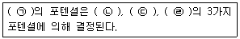
- ㉠ 천이, ㉡ 입지, ㉢ 종의 공급, ㉣ 종의 관계
- ㉠ 입지, ㉡ 종의 공급, ㉢ 종의 관계, ㉣ 천이
- ㉠ 종의 공급, ㉡ 천이, ㉢ 입지, ㉣ 종의 관계
- ㉠ 종의 관계, ㉡ 천이, ㉢ 입지, ㉣ 종의 공급
(정답률: 62%)
55. 최대 침투능이 100mm/hr인 지역에 강우강도 90mm/hr로 비가 왔을 때, 지표유출량이 30mm/hr이었다면 투수능(mm/hr)은?
- 10
- 30
- 60
- 70
(정답률: 63%)
56. 폐도로 복원을 위한 지형 복원방법 중 옳지 않은 것은?
- 주변 생태계와 자연스럽게 연결되도록 한다.
- 훼손되기 이전의 원 지형에 대한 자료를 분석한다.
- 복원할 식생과의 관련성을 고려하여 지형을 조작한다.
- 도로 개발 시 도입한 인공 포장체 위에 복토하여 지형을 조작한다.
(정답률: 76%)
57. 식물군락을 녹화용 식물의 종자 파종으로 조성하고자 할 때 파종량을 구하는 식으로 옳은 것은? (단, [보기]의 항목을 이용하여 식을 구하시오.)
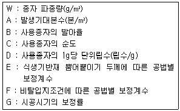
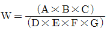
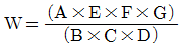
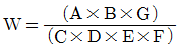
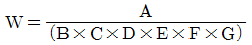
(정답률: 51%)
58. 유효토심에 대한 설명으로 옳지 않은 것은?
- 교목의 유효토심은 관목의 유효토심보다 두텁고 넓다.
- 유효토심에서는 뿌리가 호흡하며, 생육할 수 있도록 적당한 공기와 수분이 필요하다.
- 얕은 부분은 수분, 공기, 양분을 보유할 수 있는 부드러운 성질의 토층이 요구된다.
- 근계 가운데 수분이나 양분을 흡수하는 세근의 생육범위는 유효토심의 깊은 부분이다.
(정답률: 57%)
59. 자연환경복원계획을 수립하기 위한 여러 요소의 설명으로 가장 거리가 먼 것은?
- 지형의 조사, 분석에서는 대상지의 경사, 고도, 방향 등을 위주로 하여야 한다.
- 수리, 수문, 수질의 조사와 분석은 습지, 하천, 넓은 유역의 계획에 중요한 요소이다.
- 토양은 자연적 식생 천이에 그리 중요한 요소는 아니나 초기 복원에 중요한 요소이다.
- 기후는 동식물분포, 식물의 발달, 천이에 영향을 끼칠 뿐만 아니라 인간의 행태에도 중요한 인자이다.
(정답률: 72%)
60. 곤충 서식처의 조성 원칙 및 고려사항 중 식생과 관련된 설명으로 옳지 않은 것은?
- 연못ㆍ호안에는 가급적 건생식물과 단층림을 조성
- 도입하는 식물들은 주변의 자생지로부터 이식
- 관목과 교목들을 적절히 성토된 지역에 식재하고 다공질 공간과 관목으로 구성된 덤불도 식재
- 나비 유충의 먹이식물과 성충의 흡밀식물 및 먹이식물, 나비와 일부 딱정벌레의 수액식물 등을 적절히 조화시켜 식재
(정답률: 68%)
4과목: 경관생태학
61. 작은 패치와 비교할 때 큰 패치가 갖는 생태학적 장점이 아닌 것은?
- 종의 공급원 역할을 수행한다.
- 내부종의 개체군 유지에 적합하다.
- 환경변화로 인한 종소멸을 막는 완충지 역할을 수행한다.
- 총 분산 및 재정착이 이루어지는 징검다리 역할을 수행 한다.
(정답률: 61%)
62. 제주특별자치도 한라산의 수직적 산림대 중 온대림과 한대림을 구분하는 해발 표고기준으로 옳은 것은?
- 500 m
- 1500 m
- 2000 m
- 2500 m
(정답률: 69%)
63. 비오톱을 보전하거나 복원하기 위한 고려사항으로 옳지 않은 것은?
- 일정한 공간에 일정한 간격으로 기능적인 배치를 한다.
- 자연환경을 파악하여 조성 대상지 본래의 자연환경을 복원하고 보전한다.
- 비오톱 조성 설계 시 이용소재(생물과 비생물 모두 포함)는 그 지역 본래의 것으로 한다.
- 순수한 자연생태계의 보전, 복원을 위해 사람이 들어가지 않는 핵심지역을 설정한다.
(정답률: 55%)
64. 추이대(ecotone)와 가장자리(edge)의 설명으로 틀린 것은?
- 연안 경관은 추이대와 가장자리의 좋은예이다.
- 고산지대의 추이대는 기후 요소에 따라 계절군락을 잘 형성한다.
- 추이대는 생물군에서부터 개별 패치에 이르기까지 다양한 규모로 파악이 가능하다.
- 경관의 물질 흐름은 다른 패치 사이의 가장자리를 통해 진행되므로 중요하다.
(정답률: 61%)
65. 지리정보시스템 (GIS)에서 기본도를 그림과 같이 A와 B의 2 가지의 자료 유형으로 재구성하였다. A와 B 유형의 형식을 옳게 나타낸 것은?
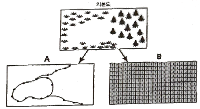
- A: 벡터(vector), B: 래스터(raster)
- A: 페리메터(perimeter), B: 셀(cell)
- A: 아노말리(anomaly), B: 그리드(grid)
- A: 커브(curve), B: 모자이크(mosaics)
(정답률: 61%)
66. 적정 패치의 수를 결정할 때 고려할 요인으로 가장 거리가 먼 것은?
- 종집합
- 종풍부도
- 바람이동
- 종의 행동반경
(정답률: 73%)
67. 경관의 이질성에 대한 설명으로 옳지 않은 것은?
- 간섭이 증가하면 이질성은 항상 감소한다.
- 이질성이 중간 정도일 때 종다양성이 가장 높다.
- 이질성에는 미시적 이질성과 거시적 이질성이 있다.
- 아프리카 사바나 지역은 미시적 이질성이 높은 지역이다.
(정답률: 69%)
68. 원격탐사(Remote sensing)를 이용한 경관특성 분석에 대한 설명 중 옳지 않은 것은?
- 일정지역의 구조적인 경관 유형의 파악이 가능하다.
- 지하수위의 변화에 대한 정보를 구체적으로 제시해 줄 수 있다.
- 분광 특성을 통해 경관 구조를 정량적으로 파악하는데 용이핟.
- 삼림 경관에서 수목의 활력도, 수관 및 잎의 변화 등을 파악하는데 용이하다.
(정답률: 60%)
69. 경관생태학에서 패치에 대한 설명으로 옳지 않은 것은?
- 경관모자이크의 구성요소이다.
- 주변과 구별되는 상대적으로 균일한 넓은 지역이다.
- 패치지역 전체에 걸쳐 내부의 미세한 불균일성은 반복적이고 유사한 형태로 나타난다.
- 패치의 형태가 굴곡이 심할수록 패치와 주변 매트릭스간에 존재하는 상호작용이 적어진다.
(정답률: 54%)
70. 다음 [보기]가 설명하는 천이의 유형은?
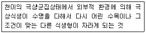
- 진행적 천이
- 퇴행적 천이
- 순환적 천이
- 자발적 천이
(정답률: 61%)
71. 자연보호구 설계를 위한 개념으로 옳지 않은 것은?
- 자연은 복합적이고 동적이다.
- 자연보호구의 생태적 과정을 보전한다.
- 학제간 교류와 다양한 협업을 통해 설계한다.
- 자연은 항상 불변이며 자기유지적이며, 균형을 향해 간다.
(정답률: 65%)
72. 원격탐사(RS)에 대한 설명으로 옳지 않은 것은?
- 원격탐사시스템은 태양에너지를 에너지원으로 활용한다.
- 전자파 스펙트럼은 모든 물체에서 동일한 특성을 가지고 있다.
- 비접촉 센서를 이용하여 관심의 대상이 되는 물체나 현상에 대한 정보를 얻는 기술이다.
- 물체에서 방출되거나 반사되는 전자파의 양을 측정하여 판독하거나 필요한 정보를 얻는다.
(정답률: 65%)
73. 경관생태학의 연구 특성에 관한 설명으로 옳지 않은 것은?
- 토지시스템(Landsystem)조사를 이용할 수 있다.
- 경관의 전체상을 파악하기 위하여 원격탐사(RS)나 항공사진 등을 이용한다.
- 인간과 지역한경의 관계를 생태학적 시점에서 분석ㆍ종합ㆍ평가하여 바람직한 지역환경의 보전ㆍ창출을 연구하는 학문이다.
- 대상을 보다 작은 요소로 분해하여 요소마다의 특성을 분석함으로써 큰 전체구조를 이해하는 방법으로 연구를 진행한다.
(정답률: 56%)
74. 댐 건설이 토지이용과 경관자원에 미치는 간접적 영향으로 옳지 않은 것은?
- 수몰지역 주변의 광범위한 토지이용의 변화
- 댐 건설로 인한 진입도로 및 통과도로의 신축
- 담수호의 부유물질 증가로 인한 시각적 불쾌감
- 홍보관, 전망대, 광장 등의 부대시설로 인한 경관의 변화
(정답률: 48%)
75. 식생의 생태학적 관리방식은 목표로 하는 자연과 그 복원에 중요한 정보를 준다. 천이의 순응을 이용한 관리방식에 해당하지 않는 것은?
- 가벼운 교란이 발생한 지역에 적합한 방식이다.
- 천이에 따라 발생하는 생물군집과 생태계 스스로 변화를 존중한다.
- 목표로 하는 생물군집의 생식, 생육을 위한 조건을 인위적으로 지원한다.
- 자연의 변화를 자연 천이와 재생에 맡기고 그 이상의 특별한 간섭은 행하지 않는다.
(정답률: 68%)
76. 사전환경성검토는 현황조사, 영향예측, 저감대책으로 구성된다. 다음 중 현황조사 내용에 포함되지 않는 것은?
- 개발사업의 유형
- 환경관련 보전지역의 지정현황
- 생물서식공간의 파괴, 훼손, 축소의 정도
- 개발대상지역 내 동ㆍ식물상, 주요종(법적보호종, 희귀종 등) 분포현황
(정답률: 30%)
77. 도시생태계에 대한 설명으로 가장 거리가 먼 것은?
- 외부로부터 물질과 에너지를 공급받는 생태계
- 태양에너지와 화석에너지에 의존하는 종속 영양계
- 특정 환경에 적응한 종이 우세하게 나타나는 생태계
- 생물군집과 비생물환경 사이에 물질순환이 이루어지는 생태계
(정답률: 55%)
78. 비오톱에 대한 설명으로 옳지 않은 것은?
- “Bio”는 생활, 생명을 의미하고, “top”은 장소, 공간을 의미한다.
- 다양한 야생 동ㆍ식물과 미생물이 서식하고 자연의 생태계가 기능하는 공간을 의미한다.
- 비오톱이란 공간적 경계가 없는 특정생물군집의 서식지를 의미한다.
- 비오톱을 새롭게 조성하는 경우에는 경관이 갖는 자연공간 형태의 특징이 보전ㆍ유지되어야 한다.
(정답률: 72%)
79. 다음 중 모래갯벌(sand flat)에 대한 설명으로 옳지 않은 것은?
- 다른 말로 사질갯벌이라고도 하며, 바닥이 주로 모래질로 형성되어 있다.
- 저질의 모래 알갱이의 평균 크기가 0.2 ~ 0.7mm 정도이고, 이질(泥質) 함량비가 대체로 4%를 넘지 않는다.
- 약간의 펄이 섞인 우리나라 서해안의 모래 갯벌에는 갑각류나 조개류보다는 퇴적물식을 하는 갯지렁이류가 우점 한다.
- 해수의 흐름이 빠른 수로주변이나 바람이 강한 지역의 해변에 나타나는데, 해안경사가 급하고 갯벌의 폭이 좁아 보통 1km 정도이다.
(정답률: 57%)
80. 도시녹지의 양을 증대하기 위한 방법과 관계가 없는 것은?
- 녹지의 농도 증가
- 녹지의 규모 확대
- 녹지의 종류 증가
- 녹지의 거리 축소
(정답률: 45%)
5과목: 자연환경관계법규
81. 국토의 계획 및 이용에 관한 법령상 도시ㆍ군관리계획결정으로 용도지구를 세분할 때 경관지구에 해당하지 않는 것은?
- 자연경관지구
- 일반경관지구
- 특화경관지구
- 시가지경관지구
(정답률: 43%)
82. 백두대간 보호에 관한 법률상 다음 [보기]가 설명하는 지역은?
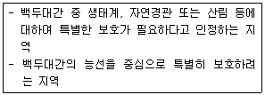
- 중권역
- 대권역
- 완충구역
- 핵심구역
(정답률: 77%)
83. 다음은 자연공원법규상 공원점용료 등의 징수를 위한 점용료 또는 사용료 요율기준이다. ( )안에 알맞은 것은?
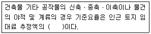
- 100분의 20 이상
- 100분의 30 이상
- 100분의 40 이상
- 100분의 50 이상
(정답률: 48%)
84. 자연환경보전법규상 시ㆍ도지사는 위임업무에 대한 환경부장관 보고사항 중 생태ㆍ경관보전지역 안에서의 행위중지ㆍ원상회복 또는 대채자연의 조성 등의 명령 실적의 보고 횟수 기준으로 옳은 것은?
- 수시
- 연 1회
- 연 2회
- 연 4회
(정답률: 50%)
85. 환경정책기본법상 다음 [보기]의 ( )안에 적합한 용어로 옳은 것은?
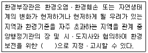
- 특별대책지역
- 특별환경지역
- 특별재난지역
- 특별관심지역
(정답률: 43%)
86. 환경정책기본법령상 하천의 수질 및 수생태계기준 중 “음이온 계면활성제(ABS)" 기준값(mg/L)으로 옳은 것은? (단, 사람의 건강보호기준으로 한다.)
- 검출되어서는 안 됨(검출한계 0.001)
- 검출되어서는 안 됨(검출한계 0.01)
- 0.⑤ 이하
- 0.5 이하
(정답률: 30%)
87. 자연환경보전법령상 자연환경보전지역에 대한 생태계보전협력금의 산정ㆍ부과 시 사용되는 지역계수로 옳은 것은?
- 2
- 3
- 4
- 5
(정답률: 43%)
88. 백두대간보호에 관한 법률상 백두대간보호 기본계획의 수립에 관한 내용으로 옳지 않은 것은?
- 환경부장관은 산림청장과 협의하여 백두대간보호 기본계획의 수립에 관한 원칙과 기준을 정한다.
- 산림청장은 기본계획을 수립하였을 때에는 관계 중앙행정기관의 장 및 도지사에게 통보하여야 한다.
- 산림청장은 백두대간을 효율적으로 보호하기 위하여 기본계획을 환경부장관과 협의하여 5년마다 수립하여야 한다.
- 산림청정은 기본계획을 수립하거나 변경할 때에는 미리 관계 중앙행정기관의 장 및 기본계획과 관련이 있는 도지사와 협의하여야 한다.
(정답률: 62%)
89. 국토기본법령상 국토정책위원회와 분과위원회에 두는 전문위원의 수와 임기로 옳은 것은?
- 전문위원의 수는 3명 이내로 하며, 임기는 2년으로 한다.
- 전문위원의 수는 3명 이내로 하며, 임기는 3년으로 한다.
- 전문위원의 수는 10명 이내로 하며, 임기는 2년으로 한다.
- 전문위원의 수는 10명 이내로 하며, 임기는 3년으로 한다.
(정답률: 37%)
90. 국토의 계획 및 이용에 관한 법률상 도시ㆍ군관리계획의 입안을 위한 기초조사 등에 대한 내용으로 옳지 않은 것은?
- 도시ㆍ군관리계획 입안을 위한 기초조사의 내용에 환경성 검토를 포함하여야 한다.
- 기초조사의 내용에 토지의 토양, 입지, 활용가능성 등 토지적성평가를 포함하여야 한다.
- 지구단위계획국역 안의 나대지면적이 구역면적의 2퍼센트에 미달하는 경우 기초조사를 실시하지 않을 수 있다.
- 지구단위계획을 입안하는 구역이 도심지에 위치하는 경우 규정에 따른 기초조사, 토지의 적성에 대한 평가를 반드시 실시하여야 한다.
(정답률: 36%)
91. 야생동물 보호 및 관리에 관한 법률상 특별보호구역에서 행위제한에 해당하지 않는 것은? (단, 다른법이 정하는 기준 및 멸종위기 야생식물의 보호를 위하여 불가피한 경우는 제외한다.)
- 토석의 채취
- 토지의 형질변경
- 기본에 하던 영농행위를 지속하기 위하여 필요한 행위
- 하천, 호소 등의 구조를 변경하거나 수위 또는 수량에 변동을 가져오는 행위
(정답률: 68%)
92. 환경정책기본법령상 환경부장관이 특별대책지역내의 환경개선을 위해 토지이용과 시설설치를 제한할 수 있는 경우와 가장 거리가 먼 것은?
- 식생의 발육을 일정기간 제한할 필요가 있는 경우
- 수역이 특정유해물질에 의하여 심하게 오염된 경우
- 자연생태계가 심하게 파괴될 우려가 있다고 이전되는 경우
- 환경기준을 초과하여 생물의 생육에 중대한 위해를 가져올 우려가 있다고 인정되는 경우
(정답률: 65%)
93. 환경정책기본법상 정부가 매년 환경보전시책의 추진상황에 관한 보고서를 국회에 제출할 때 포함되는 주요 사항이 아닌 것은? (단, 그 밖에 환경보전에 관한 주요사항은 제외한다.)
- 국내외 환경 동향
- 무기 수출ㆍ입 동향
- 환경오염ㆍ환경훼손 현황
- 환경보존시책의 추진상황
(정답률: 72%)
94. 습지보전법상 습지의 보전 및 관리를 위해 환경부장관, 해양수산부장관 또는 시ㆍ도지사가 지정ㆍ고시 할 수 있는 지역으로 옳지 않은 것은?
- 습지보호지역
- 습지개선지역
- 습지복원지역
- 습지주변관리지역
(정답률: 30%)
95. 야생생물 보호 및 관리에 관한 법규상 양서류ㆍ파충류의 멸종위기 야생식물 I급에 해당하는 것은?
- 맹꽁이(Kaloula borealis)
- 표범장지뱀(Eremias argus)
- 금개구리(Pelophylax chosenicus)
- 수원청개구리(Hyla suweonensis)
(정답률: 52%)
96. 백두대간 보호에 관한 법률상 규정을 위반하여 핵심구역에서 허용되지 않는 행위를 한 자에 대한 벌칙기준으로 옳은 것은?
- 1년 이하의 징역 또는 1천만원 이하의 벌금
- 3년 이하의 징역 또는 3천만원 이하의 벌금
- 5년 이하의 징역 또는 5천만원 이하의 벌금
- 7년 이하의 징역 또는 7천만원 이하의 벌금
(정답률: 44%)
97. 독도 등 도서지역의 생태계 보전에 관한 특별법상 환경부장관은 특정도서보전 기본계획을 몇 년마다 수립하는가?
- 1년
- 5년
- 10년
- 15년
(정답률: 57%)
98. 야생생물 보호 및 관리에 관한 법률상 수렵면허에 대한 사항으로 옳지 않은 것은?
- 제1종 수렵면허는 총기를 사용하는 수렵과 관련한 면허이다.
- 제2종 수렵면허는 수렵 도구를 사용하지 않는 수렵활동과 관련한 면허이다.
- 수렵면허는 그 주소지를 관할하는 시장ㆍ군수ㆍ구청장으로부터 받는다.
- 수렵면허를 받은 자는 환경부령이 정하는 바에 따라 5년마다 수렵면허를 갱신하여야 한다.
(정답률: 47%)
99. 다음은 국토의 계획 및 이용에 관한 법률상 용어의 뜻이다. ( )안에 알맞은 것은?
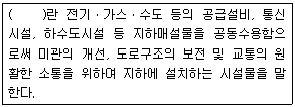
- 공동구
- 공용구
- 수용구
- 공동수용구
(정답률: 56%)
100. 독도 등 도서지역의 생태계 보전에 관한 특별법상 특정도서에서 인화물질을 이용하여 음식물을 조리하거나 야영을 한 자에 대한 과태료 부과기준은?
- 100만원 이하의 과태료를 부과한다.
- 300만원 이하의 과태료를 부과한다.
- 500만원 이하의 과태료를 부과한다.
- 1000만원 이하의 과태료를 부과한다.
(정답률: 50%)